LLMGW, la passerelle IA de l'organisation
Un point de connexion unique entre les utilisateurs, les agents et les modèles de langage. Il applique la politique IA : qui peut utiliser quel modèle, quelles données peuvent sortir, et avec quelle traçabilité.
Guide utilisateur du chat ↗1Objectif
Renforcer la politique IA en imposant un passage unique vers les LLM. Les accès directs aux fournisseurs (OpenAI, Anthropic, Mistral, DeepSeek…) sont bloqués dans les firewalls et dans Cisco Umbrella. Seule la passerelle est autorisée à les joindre.
Ce point central permet de :
- contrôler l'accès : chaque utilisateur ou application s'identifie avec sa propre clé et reçoit un profil ;
- protéger les données : les informations sensibles sont remplacées par des jetons avant de quitter l'organisation, puis restaurées dans la réponse ;
- choisir le modèle selon le profil, avec repli automatique en cas de panne ;
- mesurer les volumes, les temps de réponse, les conversions et les violations.
2Architecture
À gauche, la zone de confiance : les utilisateurs, les agents, les applications et les LLM locaux. À droite, Internet, zone non maîtrisée : les LLM cloud. La passerelle se place en bordure : toute requête vers un LLM la traverse, et c'est le seul composant autorisé à sortir vers les fournisseurs.
3Accès
Portail web /chat
Pour les utilisateurs. Connexion avec Microsoft (Entra ID), Google ou la clé personnelle, puis choix d'un modèle parmi ceux autorisés par le profil.
- Documents joints : txt, md, csv, json, PDF, docx. Le texte est extrait dans le navigateur, puis anonymisé par la passerelle.
- Images et fichiers traités selon le profil : transmis, remplacés par un carré blanc ou refusés (voir 11. Images et fichiers).
- Historique des 10 dernières conversations, conservé dans le navigateur ; bouton Aide vers le guide utilisateur.
- Sous chaque réponse : le modèle utilisé et le nombre de données pseudonymisées.
API agents et applications
Pour les agents (Claude Cowork, Claude Code, Hermes) et les applications. Même adresse que le portail, avec une clé d'application.
- Format OpenAI :
/v1/chat/completions,/v1/models. - Format Anthropic :
/v1/messages,/v1/messages/count_tokens. /v1/me: profil, quotas et consommation de l'appelant.- Streaming pris en charge dans les deux formats.
Clients testés
| Client | Raccordement | État |
|---|---|---|
| Claude Code | ANTHROPIC_BASE_URL vers la passerelle, ANTHROPIC_AUTH_TOKEN = clé d'application | opérationnel |
| Hermes Agent | fournisseur personnalisé au format OpenAI, adresse /v1 de la passerelle | opérationnel |
| SDK OpenAI / Anthropic | changement d'adresse de base et de clé | opérationnel |
| Claude Cowork | trafic redirigé vers la passerelle ; redirection testée avec succès en septembre 2026 | opérationnel |
Procédures de raccordement : voir 19. Raccorder les clients.
4Authentification
Chaque accès est identifié. Trois méthodes coexistent ; le SSO s'ajoute aux clés sans les remplacer.
| Méthode | Pour qui | Où |
|---|---|---|
| SSO OpenID Connect | personnes : Microsoft Entra ID, Google, ou tout fournisseur OIDC (Okta, Keycloak…) | portail web et dashboard |
| Clé gateway | personnes sans SSO, agents et applications | portail web (désactivable) et API |
| Jeton d'administration | administrateur technique, secours | dashboard |
Profil attribué après une connexion SSO
- Un utilisateur déclaré avec la même adresse email garde son profil et ses quotas.
- Sinon, la première règle qui correspond : groupe Entra → profil, rôle d'application → profil, ou motif d'email (
*@exemple.be) → profil. - Sinon, le profil par défaut du fournisseur.
- Sinon, l'accès est refusé avec un message explicite.
Les administrateurs sont désignés par rôle d'application, groupe Entra ou adresse email, ou listés dans les comptes d'administration (Admin ou Support) : ils ouvrent le dashboard sans jeton. Google ne transmet pas les groupes : avec Google, les profils s'attribuent par domaine, par email ou par utilisateur déclaré.
Les arrivées, départs et changements de service suivent l'annuaire. Un changement de groupe s'applique à la connexion suivante (session de 12 heures par défaut).
5Profils
Un profil regroupe tout ce qui s'applique à un utilisateur ou à une application : les modèles autorisés, la politique de données, les images et les fichiers par extension, un prompt de comportement, les quotas et les destinataires d'alertes. Chaque clé est rattachée à un seul profil.
| Profil | Usage | Données sensibles | Images | Modèles |
|---|---|---|---|---|
| Open | tests, données publiques | journalisées rien n'est modifié | transmises | tous |
| Anonymisation | usage courant | anonymisées puis restaurées | carré blanc | cloud et locaux |
| Restricted | santé, données personnelles | anonymisées ; NISS, IBAN, cartes bloqués | bloquées + journal | liste réduite |
| Interne | traitements confidentiels | journalisées | transmises | LLM locaux uniquement |
Profils de référence. Les noms et les règles se paramètrent dans le dashboard.
Le prompt de comportement est ajouté en tête de chaque requête du profil, par exemple « Réponds en français ; ne pose jamais de diagnostic ». Il n'est pas anonymisé.
6Filtrage et anonymisation
À l'aller, la passerelle détecte les données sensibles et applique l'action du profil. Au retour, elle remplace les jetons par les valeurs d'origine, y compris en streaming. L'utilisateur lit une réponse normale ; le fournisseur n'a vu que des jetons.
Figure 2. Anonymisation bidirectionnelle. La correspondance jeton → valeur ne quitte pas la passerelle et n'est pas conservée.
Actions possibles, par type de donnée et par profil
| Action | Effet | Compté comme |
|---|---|---|
| anonymiser | remplacé par un jeton, restauré dans la réponse | conversion |
| bloquer | requête refusée, rien n'est envoyé au LLM | violation |
| journaliser | transmis tel quel, mais compté | détection |
| ignorer | pas de détection | rien |
Ce qui est détecté
| Famille | Exemples | Méthode |
|---|---|---|
| Identifiants | email, téléphone, IBAN, NISS belge, carte bancaire, adresse IP | motifs avec clé de contrôle (IBAN, NISS, Luhn) |
| Références | numéro de dossier, de patient, de facture, matricule | motifs métier, ou identifiant après « dossier », « patient », « n° »… |
| Personnes | « M. Keizer », « Gérald Keizer », « KEIZER Gérald », prénoms seuls | titres (fautes de frappe tolérées), mots de contexte, dictionnaire de prénoms FR, NL et EN |
| Organisations | clients, établissements de soins (HUB, Erasme, Bordet, HUDERF…) | listes paramétrables ; les sigles aussi avec points (H.U.B.) |
| Lieux | adresses, « 6041 Gosselies », « domicilié à… » | formats d'adresse, liste de localités, mots de contexte |
| Dates | date de naissance, ou toutes les dates | formats numériques et en toutes lettres |
| Divers | nom d'un animal (« mon chien Rex ») | mot de contexte |
| Images et fichiers | photos, scans, PDF, Word, tableurs, archives… | action par profil et par extension : voir 11. Images et fichiers |
Une mémoire des noms reconnaît ensuite un nom déjà repéré, même seul et même mal orthographié (« Keizr »). Elle ne contient que des empreintes chiffrées, jamais les noms.
Une liste « jamais anonymiser » protège les produits, les marques et les termes techniques (Claude, GitHub, API…) contre les faux positifs. Un dictionnaire de mots courants évite de prendre « Transport » ou « Custom » pour un nom de famille.
7Routage
La décision suit toujours le même chemin : clé → utilisateur → profil → LLM autorisés, dans l'ordre.
- Modèles autorisés par cible, avec motifs (
mistral-*,claude-*). - Repli automatique : si la première cible est en panne, saturée (429) ou en erreur (5xx), la suivante du profil prend le relais.
- Cible imposée :
mistral/mistral-largeforce une cible précise, si le profil l'autorise. - Alias : un nom demandé peut être traduit, par exemple
claude-*versdeepseek-flash. - Formats : un client OpenAI est routé vers des cibles OpenAI, un client Anthropic vers des cibles Anthropic.
- Cibles hors service : une cible sans clé ou un LLM local qui ne répond pas n'est pas proposé aux utilisateurs.
8Quotas et alertes
Quatre limites : requêtes par minute, requêtes par jour, tokens par jour, tokens par mois. Elles se fixent à trois niveaux :
- par profil : la limite s'applique à chaque utilisateur du profil ;
- par utilisateur : elle surcharge celle du profil, champ par champ ;
- par LLM : un budget total partagé par tous. Une cible saturée est sautée au profit de la suivante.
Au dépassement, la requête est bloquée (erreur 429) ou simplement signalée, au choix.
Alertes par email : un récapitulatif toutes les N minutes, envoyé aux destinataires du profil et aux destinataires par défaut. Déclencheurs : violation, quota atteint, erreur d'un LLM, et fichier bloqué dont la règle demande une alerte (envoyée même si le déclencheur « violation » est désactivé). Les messages ne contiennent aucune valeur sensible, seulement les types de données concernés.
9Monitoring et statistiques
Chaque requête enregistre la source, la destination, le modèle, le statut, les volumes, les tokens et les temps de réponse. Aucune valeur sensible n'est stockée, seulement des compteurs par type.
| Mesure | Détail |
|---|---|
| Volumétrie | globale, par LLM (destination), par utilisateur (source) : requêtes, tokens entrée et sortie, octets |
| Temps de réponse | IN lecture de la requête · GATEWAY traitement par la passerelle · OUT réponse du LLM, avec premier octet, médiane et p95 |
| Données sensibles | conversions (anonymisées ou retirées) et violations (bloquées), par type et par utilisateur |
| Erreurs | pannes, clés refusées, quotas, avec le motif renvoyé par le LLM |
| Fichiers | journal dédié : nom, extension, taille, empreinte SHA-256 et action, 30 jours (voir 11) |
Périodes et conservation
| Vue | Granularité | Source des données |
|---|---|---|
| 48 heures | heure | détail par requête |
| 60 jours | jour | détail (30 derniers jours), puis agrégats |
| 6 semaines | semaine | détail et agrégats |
| 6 mois | mois | agrégats (profondeur maximale) |
Généralisation après 30 jours. Le détail par requête est regroupé par jour × utilisateur × LLM. Le modèle exact et les percentiles sont alors perdus ; volumes, moyennes, conversions et violations sont conservés environ 6 mois, puis supprimés.
10Mode DEBUG
Désactivé par défaut, activable le temps d'un diagnostic. Chaque échange est alors archivé : la requête telle que reçue par le LLM, la réponse brute, la correspondance jetons → valeurs et chaque mot détecté avec l'action appliquée.
- Vue de l'échange : uniquement le nouveau message et la réponse, mots surlignés par action (bleu anonymisé, rouge bloqué, orange journalisé). Bascule entre vue anonymisée et vue d'origine.
- Contexte complet, replié : prompt système et historique renvoyés par le client.
- Vue globale : tout ce qui a été détecté dans l'archive, pour repérer les faux positifs récurrents.
Ce mode stocke des valeurs en clair. Purge automatique (24 heures par défaut), bandeau « DEBUG actif » dans le dashboard et bouton pour vider l'archive.
11Images et fichiers
Les images et les fichiers joints suivent leur propre politique, réglée par profil et, pour les fichiers, par extension. Elle s'applique aux fichiers envoyés par l'API (formats OpenAI et Anthropic), aux documents joints dans le chat et aux images.
Images
| Réglage | Effet côté LLM (zone non fiable) | Journal |
|---|---|---|
| non changée | l'image est transmise telle quelle | non |
| carré blanc | remplacée par un carré blanc : le LLM sait qu'une image existait, sans en voir le contenu | non |
| bloquée + journal | requête refusée, rien n'est envoyé | oui |
Fichiers, par extension
| Réglage | Effet côté LLM | Journal | Alerte email |
|---|---|---|---|
| transmis + journal | le fichier part tel quel | oui | non |
| carré blanc | remplacé par un carré blanc ; pour un document du chat, son texte est remplacé par « [contenu remplacé par le gateway] » | non | non |
| bloqué + journal | requête refusée (violation de type FILE) | oui | non |
| bloqué + alerte + journal | requête refusée | oui | oui, aux destinataires « Alerter » du profil |
Une extension sans règle suit l'action par défaut du profil pour les autres fichiers (transmis + journal, sauf réglage contraire). Une image sans règle d'extension suit le réglage « Images » du profil.
Journal des fichiers
« Journal » signifie qu'une trace est conservée 30 jours, même sans mode Debug : date, utilisateur, profil, LLM, type, nom du fichier, extension, taille, empreinte SHA-256 et action. Le contenu du fichier n'est jamais stocké. Les clients renvoient toute la conversation à chaque appel : un même fichier (même empreinte, même utilisateur, même action) n'est consigné qu'une fois par période de 12 heures.
Le nom d'un fichier peut lui-même être une donnée sensible (« Dossier_Dupont.pdf ») : l'accès au journal est réservé aux comptes Admin et Support.
12Comptes d'administration et audit
Le dashboard distingue deux rôles. Un compte est identifié par l'adresse email de sa connexion SSO ; le jeton d'administration reste un accès de secours avec le rôle Admin.
| Écran | Admin | Support |
|---|---|---|
| Vue d'ensemble, Reporting, Journal des fichiers | oui | consultation |
| Utilisateurs | oui | créer, bloquer, générer une clé, changer le profil |
| Profils, Quotas | oui | consultation |
| Debug (données en clair) | oui | si autorisé ; chaque consultation est journalisée |
| LLM cibles, Filtrage, Alertes et SSO, Comptes, Audit | oui | non |
Le journal d'audit trace les connexions, les enregistrements de configuration (avec la liste des changements, sans aucun secret), les consultations et purges de l'archive Debug et les tests d'alerte. Il est conservé 400 jours.
13Langues de l'interface
Le dashboard et le chat s'affichent en anglais (par défaut), en français ou en néerlandais. Le choix se fait dans la liste en bas du menu du dashboard, dans l'en-tête du chat et sur les écrans de connexion ; il est mémorisé par navigateur. Les données (noms, descriptions, prompts, réponses des LLM) ne sont jamais traduites. Cette documentation est en français.
14Sécurité et confidentialité
- Les clés des fournisseurs restent dans la passerelle ; les utilisateurs n'en ont jamais connaissance. Le dashboard ne les affiche pas.
- Chaque utilisateur ou application a sa propre clé, révocable sans toucher aux autres.
- SSO : code d'autorisation avec PKCE,
stateetnonce; signature du jeton d'identité vérifiée avec les clés publiées par Microsoft ou Google ; session dans un cookie signé,HttpOnly,SameSite=Lax,Secureen HTTPS ; un en-tête obligatoire bloque les requêtes intersites. - Journaux et statistiques sans valeur sensible ; mémoire des noms sous forme d'empreintes chiffrées ; journal des fichiers sans contenu.
- Rôles Admin et Support vérifiés côté serveur ; journal d'audit de 400 jours.
- Configuration versionnée : les 10 dernières versions sont conservées, et un enregistrement est refusé si le fichier a changé entre-temps.
- Déploiement : un seul binaire (macOS, Linux), base SQLite locale, aucune dépendance externe.
15Prérequis
- Serveur : macOS ou Linux (x86-64 ou ARM). Ressources modestes : la passerelle ajoute quelques millisecondes par requête, jusqu'à environ une seconde pour les très longues conversations d'agents.
- Réseau : accès sortant HTTPS du serveur vers les fournisseurs retenus ; accès entrant des postes vers la passerelle.
- Clés des fournisseurs (Mistral, Anthropic, OpenAI, DeepSeek…), détenues par la passerelle uniquement.
- Pour compiler : Go 1.25 ou plus récent. Des binaires précompilés pour Linux sont fournis dans
dist/.
16Installation
- Récupérer le code (dépôt privé
VulpointLLMGw) :git clone https://github.com/jsopdebeeck/VulpointLLMGw.git cd VulpointLLMGw
- Compiler, ou utiliser un binaire de
dist/(./llmgw -versionaffiche la version) :go build -o llmgw . # poste courant GOOS=linux GOARCH=amd64 go build -o dist/llmgw-linux-amd64 . # serveur Linux
- Préparer la configuration :
cp config.example.toml config.toml ./llmgw -config config.toml -check # valide la configuration et quitte
Le binaire contient tout : le dashboard, le chat, cette documentation, la base SQLite et les dictionnaires. Aucune autre installation n'est nécessaire.
17Configuration
Toute la configuration tient dans config.toml. Le fichier est rechargé automatiquement à chaque modification ; une configuration invalide est refusée et l'ancienne reste active. La plupart des réglages se font ensuite depuis le dashboard.
| Section | Contenu |
|---|---|
[server] | adresse d'écoute, base, jeton d'administration, conservation des données (30 jours de détail, environ 6 mois d'agrégats) |
[targets.<nom>] | un LLM : format d'API, adresse, clé (de préférence via variable d'environnement), modèles, alias, quota |
[profiles.<nom>] | LLM autorisés dans l'ordre, action par défaut, actions par type, images (pass, blank, block), files par extension (pass_log, blank, block, block_alert) et files_default, prompt de comportement, alertes, quota |
[users.<nom>] | personne ou application : clé gateway, profil, quota individuel, email (lien avec l'identité SSO) |
[auth] | SSO : adresse publique, durée de session, fournisseurs Entra ID / Google / OIDC, règles groupes et rôles → profils, administrateurs |
[[admins]] | comptes d'administration : email, nom, rôle (admin ou support), accès Debug, désactivation |
[[detectors]] | détecteurs : intégrés (email, NISS, IBAN, noms, adresses…), motifs, listes de termes |
[privacy] | termes jamais anonymisés |
[alerts] | serveur SMTP, destinataires, déclencheurs, fréquence |
[debug] | activation et durée de conservation de l'archive |
Exemple minimal d'une cible et d'un utilisateur :
[targets.mistral] api = "openai" base_url = "https://api.mistral.ai/v1" api_key_env = "MISTRAL_API_KEY" models = ["mistral-*"] [users.alice] key = "gw-alice-…" # clé générée depuis le dashboard profile = "anonymisation" [profiles.anonymisation] images = "blank" # carré blanc files = { zip = "block", exe = "block_alert", csv = "pass_log", pdf = "blank" } files_default = "pass_log" # autres extensions
Avant la mise en service : définir un admin_token long et aléatoire (par exemple openssl rand -hex 24). Sans lui, le dashboard est ouvert à quiconque atteint la passerelle.
18Démarrage et service
Lancement manuel
export MISTRAL_API_KEY=… ANTHROPIC_API_KEY=…
./llmgw -config config.toml
# LLMGW 1.2.0 à l'écoute sur http://127.0.0.1:8088 (dashboard : /dashboard, documentation : /docs)
Une seule instance par port. Arrêt avec Ctrl+C : les métriques en attente sont enregistrées avant la sortie.
App macOS dans la barre des menus
macapp/build.sh construit une LLMGW.app autonome dans dist/, et dist/LLMGW-<version>.dmg pour l'installer par glisser-déposer dans Applications. Go et les Command Line Tools d'Xcode ne servent qu'à la construction : l'app embarque la passerelle (binaire universel Apple Silicon et Intel, sans dépendance hors macOS) et ne demande rien d'autre pour fonctionner.
Les données sont dans ~/Library/Application Support/LLMGW : config.toml, secrets.env, la base et le journal. Au premier lancement, l'app y crée une configuration de départ, avec un jeton d'administration aléatoire, et un modèle secrets.env (droits 600). Une installation existante (dossier contenant déjà config.toml) est reprise telle quelle via « Dossier de données… ».
Un double-clic sur l'app affiche une icône dans la barre des menus :
- une pastille d'état : verte en marche, orange au démarrage, rouge arrêtée, grise si le dossier de la passerelle est introuvable ;
- Démarrer, Arrêter, Redémarrer ; une passerelle lancée ailleurs est reconnue et peut être arrêtée ;
- Ouvrir le dashboard, le chat, la documentation ;
- Copier le jeton d'administration, pour se connecter au dashboard ;
- Modifier la configuration et Modifier les secrets (clés API, secrets SSO) dans TextEdit ; la configuration se modifie aussi depuis le dashboard ;
- Afficher le journal (
llmgw.log, dans Console), le dossier de données, et Dossier de données… pour en choisir un autre ; - Ouvrir à l'ouverture de session, pour une passerelle disponible dès la connexion au Mac ;
- menu en anglais, français ou néerlandais.
L'app charge secrets.env, démarre la passerelle à son ouverture et l'arrête quand on la quitte. Sans l'app, start.command lance la passerelle dans le Terminal en double-clic et ouvre le dashboard.
Service permanent sous Linux (systemd)
# /etc/systemd/system/llmgw.service [Unit] Description=LLMGW, passerelle IA After=network-online.target [Service] User=llmgw WorkingDirectory=/opt/llmgw EnvironmentFile=/opt/llmgw/llmgw.env # MISTRAL_API_KEY=… (droits 600) ExecStart=/opt/llmgw/llmgw -config /opt/llmgw/config.toml Restart=on-failure [Install] WantedBy=multi-user.target
sudo systemctl enable --now llmgw
journalctl -u llmgw -f # journal des requêtes
Service permanent sous macOS (launchd)
<!-- ~/Library/LaunchAgents/local.llmgw.plist -->
<plist version="1.0"><dict>
<key>Label</key><string>local.llmgw</string>
<key>ProgramArguments</key><array>
<string>/chemin/llmgw</string><string>-config</string><string>/chemin/config.toml</string>
</array>
<key>WorkingDirectory</key><string>/chemin</string>
<key>RunAtLoad</key><true/>
<key>KeepAlive</key><true/>
<key>StandardErrorPath</key><string>/chemin/llmgw.log</string>
</dict></plist>
launchctl bootstrap gui/$(id -u) ~/Library/LaunchAgents/local.llmgw.plist
19Raccorder les clients
Avec le SSO, les personnes n'ont rien à demander : leur profil vient de l'annuaire. Pour une application, ou une personne sans SSO, créer d'abord un utilisateur dans le dashboard (page Utilisateurs) : la clé gateway est générée et affichée en entier jusqu'au rechargement de la page : la copier à ce moment-là.
| Client | Réglage |
|---|---|
| Portail web | ouvrir https://<passerelle>/chat, puis « Se connecter avec Microsoft / Google » (voir Activer le SSO) ou saisir la clé personnelle ; mode d'emploi dans le guide utilisateur |
| SDK et outils OpenAI | adresse de base https://<passerelle>/v1, clé API = clé gateway |
| SDK et outils Anthropic | adresse de base https://<passerelle>, clé API = clé gateway |
| Claude Code | variables ANTHROPIC_BASE_URL et ANTHROPIC_AUTH_TOKEN (ci-dessous) ; /status confirme l'adresse |
| Hermes Agent | fournisseur personnalisé au format OpenAI dans ~/.hermes/config.yaml (ci-dessous) |
| Claude Cowork | raccordement validé en interne en septembre 2026 ; procédure détaillée à compléter |
Claude Code, dans ~/.claude/settings.json :
{
"env": {
"ANTHROPIC_BASE_URL": "https://<passerelle>",
"ANTHROPIC_AUTH_TOKEN": "gw-claude-code-…"
}
}
Hermes Agent, dans ~/.hermes/config.yaml :
providers:
llmgw:
api: https://<passerelle>/v1
api_key: gw-hermes-…
transport: chat_completions
default_model: mistral-large-latest
models: [mistral-large-latest, mistral-small-latest]
Côté Hermes, régler aussi les modèles auxiliaires (compression, extraction web…) sur ce fournisseur : sinon ces tâches contournent la passerelle.
20Activer le SSO
HTTPS requis en production : Microsoft et Google refusent une adresse de retour en http://, sauf localhost pour les essais. Renseigner base_url avec l'adresse publique de la passerelle.
Microsoft Entra ID
- Portail Azure → Entra ID → Inscriptions d'applications → Nouvelle inscription, plateforme Web, adresse de retour
https://<passerelle>/auth/callback/entra. - Noter l'ID de tenant et l'ID client ; créer un secret client, à placer dans la variable
ENTRA_CLIENT_SECRETdu serveur. - Profils par groupe : Configuration du jeton → ajouter la revendication de groupes, de préférence « groupes affectés à l'application » (le jeton est limité à 200 groupes).
- Administration : déclarer un rôle d'application
LLMGW.Admin, puis l'affecter aux administrateurs dans Applications d'entreprise.
- Google Cloud Console → API et services → Identifiants → ID client OAuth, type « Application Web », URI de redirection
https://<passerelle>/auth/callback/google. - Écran de consentement Interne pour un Google Workspace ; secret dans
GOOGLE_CLIENT_SECRET.
Configuration
[auth] base_url = "https://gateway.exemple.be" session_hours = 12 [[auth.providers]] id = "entra" type = "entra" label = "Microsoft" tenant_id = "…" client_id = "…" client_secret_env = "ENTRA_CLIENT_SECRET" allowed_domains = ["exemple.be"] admin_roles = ["LLMGW.Admin"] [[auth.providers.mappings]] group = "<ID d'objet du groupe Entra>" profile = "restricted" [[auth.providers.mappings]] role = "LLMGW.User" profile = "anonymisation" [[auth.providers]] id = "google" type = "google" client_id = "….apps.googleusercontent.com" client_secret_env = "GOOGLE_CLIENT_SECRET" allowed_domains = ["exemple.be"] default_profile = "anonymisation"
Au démarrage, le journal rappelle l'adresse de retour de chaque fournisseur ; la page Alertes et SSO du dashboard l'affiche aussi. Pour passer le portail en SSO uniquement : disable_keys = true (les clés restent valables pour l'API).
21Réseau et HTTPS
- La passerelle écoute en HTTP sur l'adresse définie dans
[server] listen. En production, la placer derrière un reverse proxy HTTPS. - Firewall et Umbrella : autoriser uniquement le serveur de la passerelle vers les domaines des fournisseurs de LLM ; bloquer ces domaines pour tous les postes.
- Postes et agents : autoriser l'adresse de la passerelle.
Exemple nginx. Le streaming exige de désactiver la mise en mémoire tampon :
location / {
proxy_pass http://127.0.0.1:8088;
proxy_http_version 1.1;
proxy_buffering off; # réponses en streaming
proxy_read_timeout 600s; # longues générations
client_max_body_size 50m; # documents joints
}
Captures réalisées sur une instance de démonstration, interface en français : utilisateurs, chiffres et données sensibles sont fictifs. Le bas du menu donne le thème, la langue, le bouton Documentation (cette page) et la version.
22Connexion
Adresse /dashboard. Connexion SSO réservée aux comptes d'administration (Admin ou Support) et aux règles des fournisseurs, ou jeton d'administration. Une personne connectée sans droit est prévenue. La langue se choisit dès cet écran.
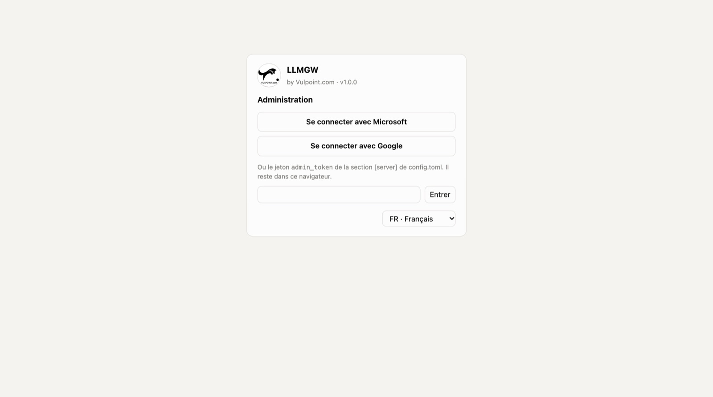

23Vue d'ensemble
- Indicateurs des 48 dernières heures : requêtes et erreurs, tokens, temps de réponse moyen du LLM, conversions, violations, utilisateurs actifs.
- Points d'attention classés par gravité, chacun avec un bouton vers la page concernée : mode DEBUG, requêtes bloquées, erreurs, alertes, cibles sans clé, protection de l'administration, quotas proches de la limite.
- Activité récente et utilisateurs les plus actifs.
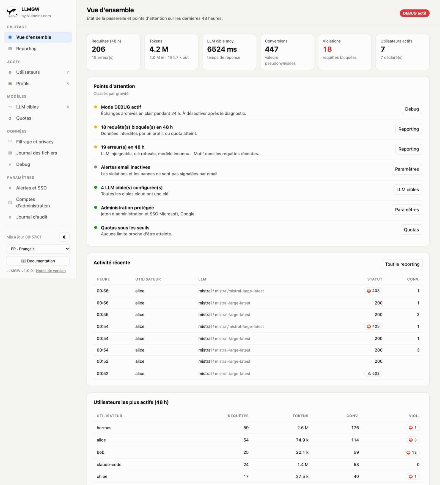

24Reporting
- Période : 48 h, 60 j, 6 semaines, 6 mois (profondeur maximale).
- Indicateurs : requêtes, tokens, volume, temps total, temps du LLM et de la passerelle (médiane, p95), conversions, violations.
- Graphiques : requêtes par LLM, tokens par utilisateur, temps de réponse IN / Gateway / LLM, conversions et violations.
- Tableaux par utilisateur et par LLM, détections par type, requêtes récentes avec le motif des erreurs.
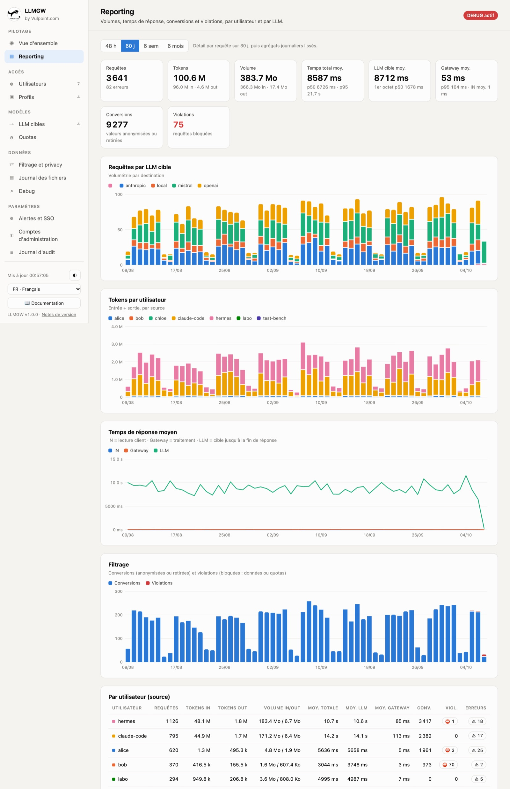

25Utilisateurs
Une ligne par personne ou application : type, description, profil, LLM accessibles, aperçu de la clé et génération d'une nouvelle clé (affichée en entier jusqu'au rechargement de la page), blocage, consommation du jour. Les personnes connectées en SSO n'ont pas besoin d'y figurer : leur profil vient de l'annuaire. Toute modification passe par la barre « Enregistrer » en bas d'écran.
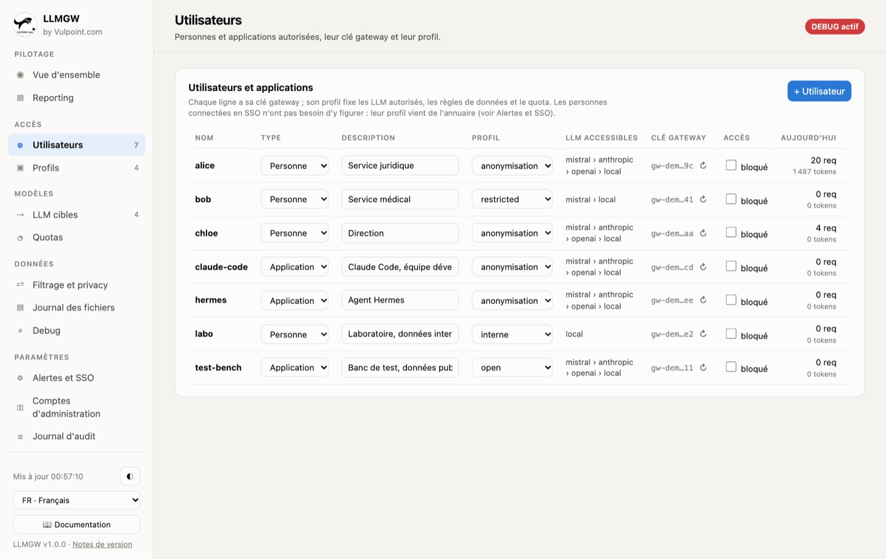

26Profils
Une carte repliable par profil ; un clic sur le titre l'ouvre. Titre vert si le profil est utilisé (utilisateur ou règle SSO), gris sinon. Une carte ouverte donne les LLM autorisés dans l'ordre de repli, le prompt de comportement, les emails d'alerte, la politique d'images, un résumé des règles de fichiers, de données et du quota, et la liste des utilisateurs.
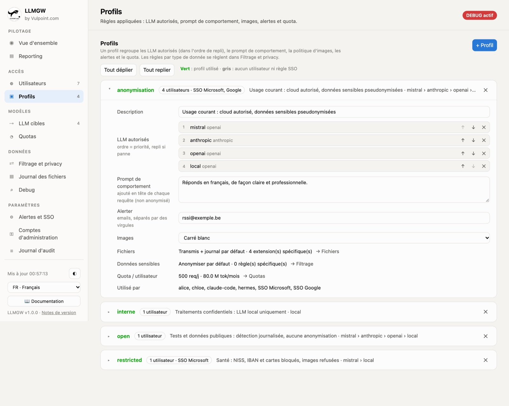

27LLM cibles
- Une carte repliable par LLM, avec un voyant : vert connecté (avec le temps de réponse), rouge injoignable ou clé refusée, gris désactivé ou non testé. « Tout retester » relance les tests.
- Carte ouverte : format d'API, adresse, modèles autorisés, alias, clé (variable d'environnement ou valeur masquée), en-têtes HTTP, options, profils qui l'utilisent.
- Tester interroge le LLM avec la clé enregistrée et liste ses modèles.
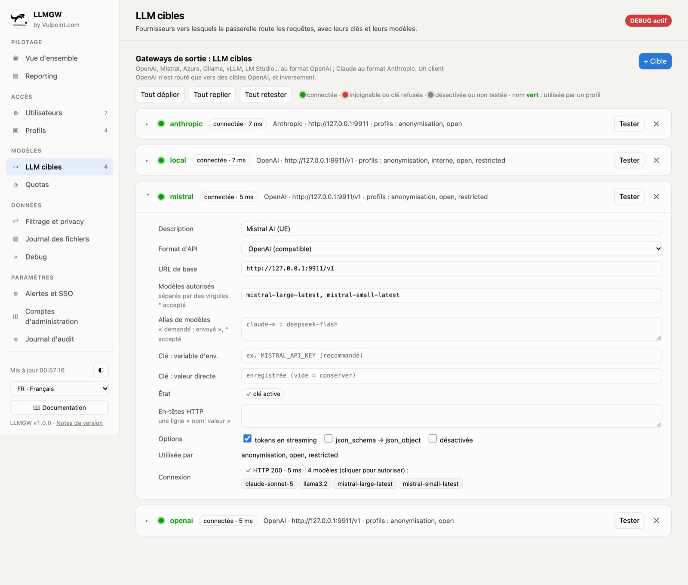

28Quotas
- Trois tableaux : par profil, par utilisateur (surcharge, −1 = illimité) et par LLM (budget partagé).
- Action au dépassement : bloquer ou alerter.
- Jauges en direct : minute en cours, requêtes et tokens du jour, tokens du mois ; orange à 80 %, rouge à 100 %.
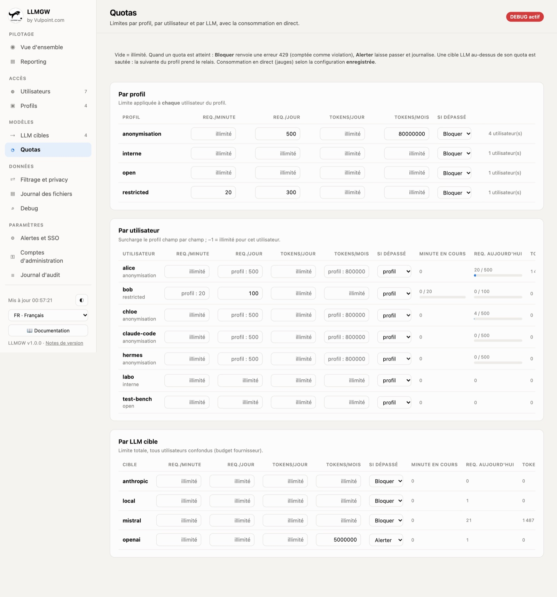

29Filtrage et privacy
Cinq onglets :
- Détecteurs : type de jeton, méthode (intégré, expression régulière, liste de termes), paramètre, ordre de priorité.
- Règles par profil : un tableau type de donnée × profil, avec l'action de chaque case, la politique d'images et la consigne « jetons » aux LLM. En gras, ce qui s'écarte de l'action par défaut ; en rouge, les blocages.
- Fichiers : un tableau extension × profil. Deux lignes de tête règlent les images sans règle d'extension et les autres fichiers ; chaque extension peut ensuite recevoir sa propre action. Entre parenthèses et en gris, l'action héritée du défaut. « + Extension » ajoute une extension absente de la liste.
- Exceptions et mémoire : liste « jamais anonymiser » et mémoire des noms (nombre d'entrées, bouton « Tout oublier »).
- Tester : un texte, un profil, et le résultat avec les jetons et la table de correspondance. Rien n'est envoyé à un LLM.
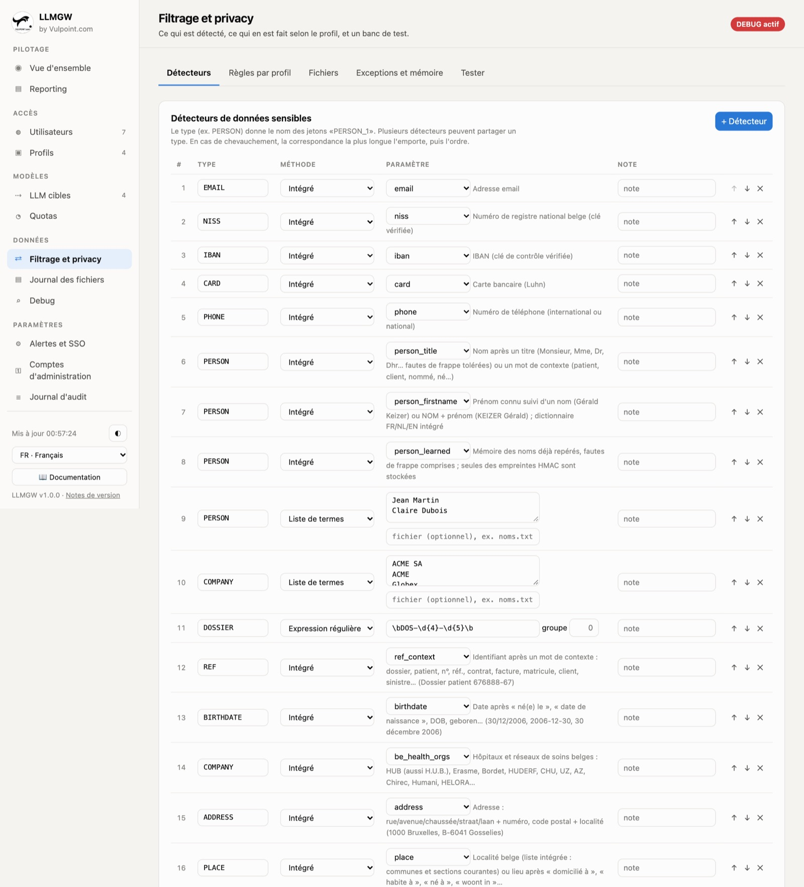

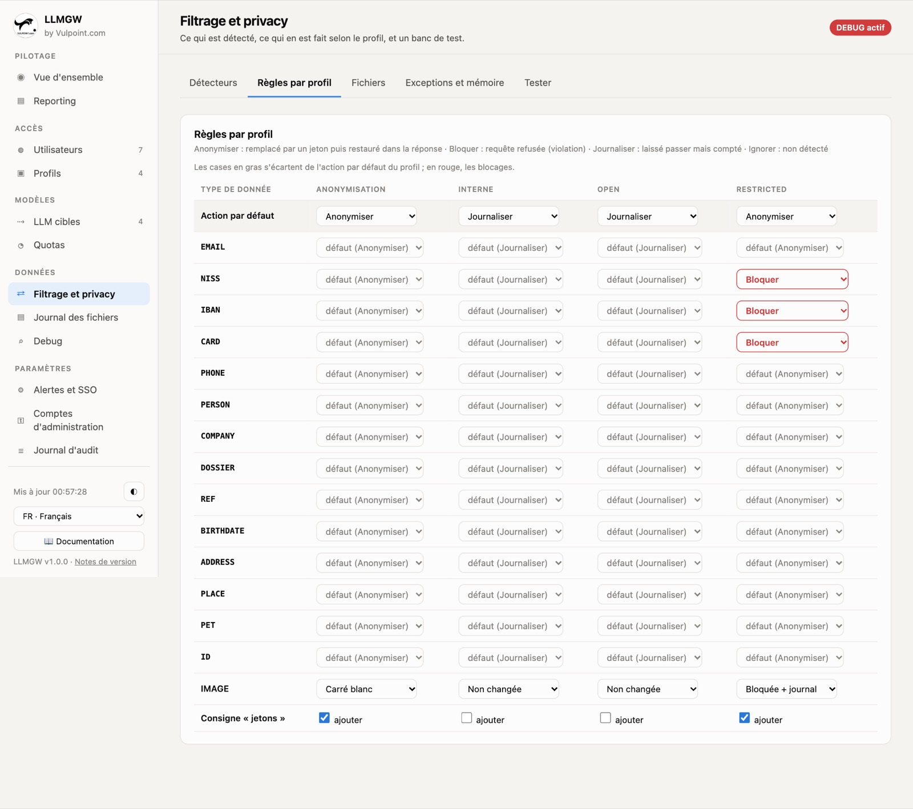

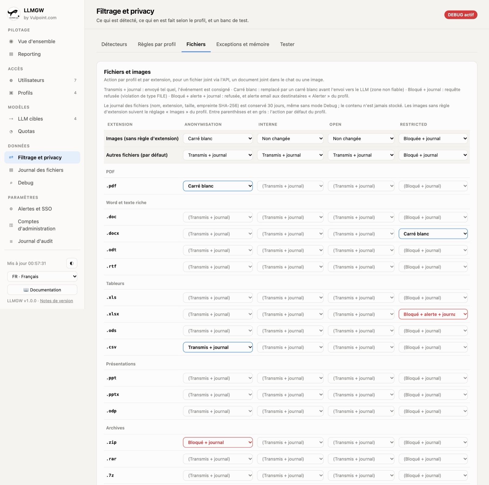

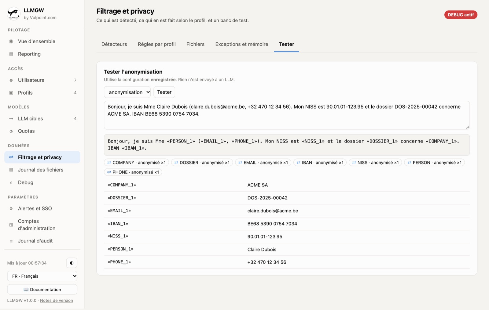

30Journal des fichiers
Les fichiers et images transmis avec journal, bloqués, ou bloqués avec alerte, sur 30 jours : date, utilisateur, profil, LLM, type, nom du fichier, taille, action et début de l'empreinte SHA-256 (empreinte complète au survol). Un filtre cherche dans toutes les colonnes. Accessible aux rôles Admin et Support.
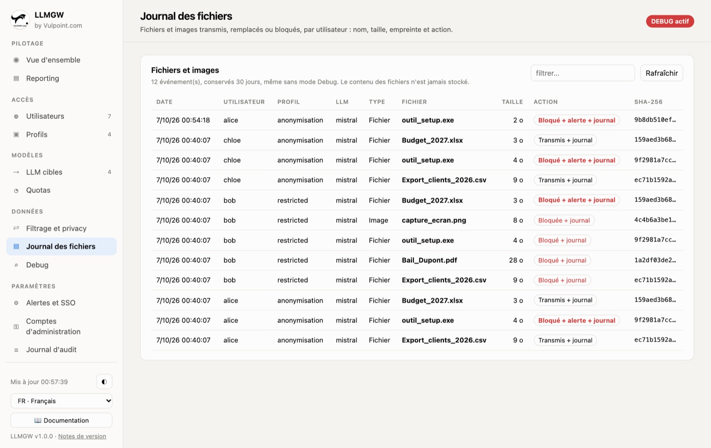

31Debug
- Mode DEBUG : activation, durée de conservation, nombre d'échanges archivés, bouton Vider.
- Échanges archivés : une ligne par requête avec les détections colorées par action.
- Détail d'un échange : ce qui a été détecté dans le nouveau message et dans la réponse, le message tel que reçu par le LLM, la réponse brute, puis le contexte complet replié. Bascule vue anonymisée / vue d'origine.
- Vue globale : toutes les valeurs détectées dans l'archive, avec un filtre.
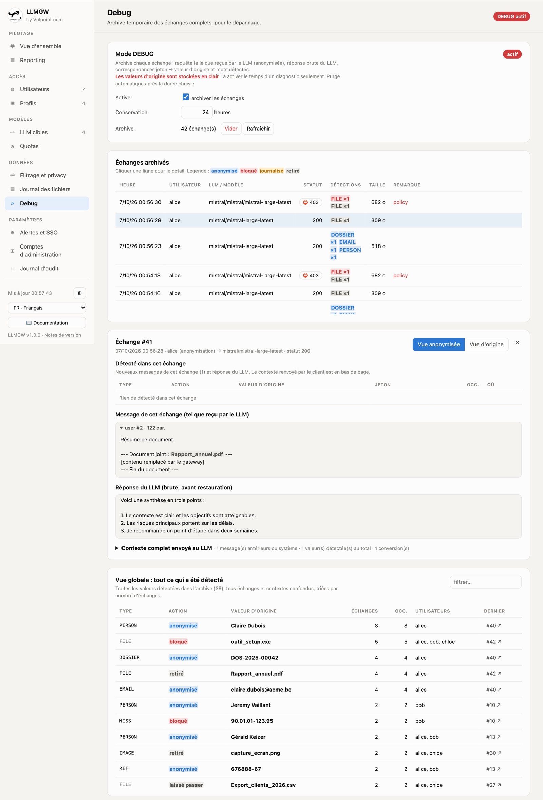

32Alertes et SSO
- Alertes par email : activation, déclencheurs (violation, quota, erreur LLM), destinataires par défaut, fréquence du récapitulatif, serveur SMTP, envoi d'un test. Les fichiers « bloqué + alerte » sont signalés en plus.
- Authentification (SSO) : fournisseurs configurés, adresse de retour à déclarer, domaines, profil attribué, administrateurs.
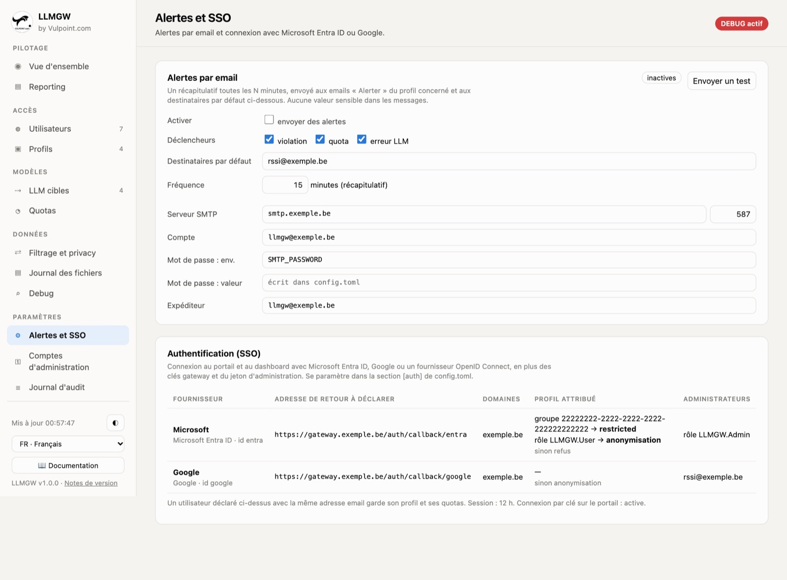

33Comptes d'administration
La liste des personnes autorisées dans le dashboard : email, nom, rôle (Admin ou Support), accès Debug pour un Support, désactivation (coupe l'accès immédiatement), dernière connexion. Un tableau rappelle les droits par rôle, puis les autres accès : règles des fournisseurs SSO et jeton d'administration.
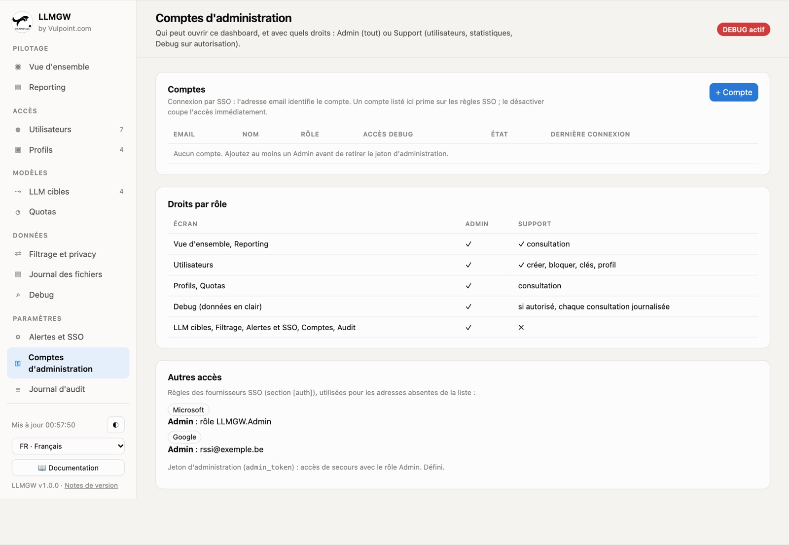

34Journal d'audit
Qui a fait quoi, et quand : date, acteur, rôle, action, cible et détail des changements. Un filtre cherche dans tous les champs. Aucune valeur sensible n'y figure.
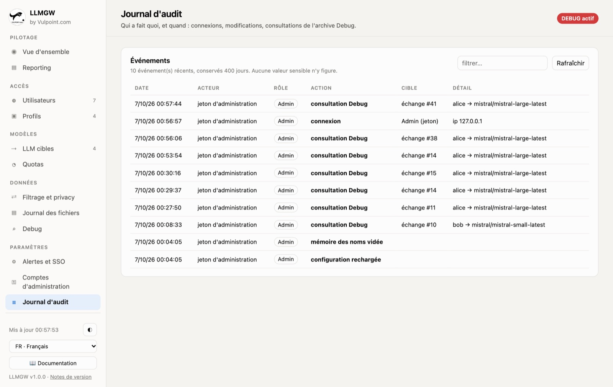

35Chat (aperçu)
Adresse /chat. Le mode d'emploi complet, destiné aux utilisateurs, est dans le guide utilisateur du chat (bouton « ? Aide » dans l'en-tête du chat).

36Limites et points ouverts
| Sujet | Situation | Piste |
|---|---|---|
| Noms sans indice | un nom sans titre, sans prénom connu, jamais vu (« Keizer est malade ») n'est pas détecté la première fois | modèle de reconnaissance d'entités (Presidio, spaCy) |
| Logos et texte dans les images | pas d'analyse d'image : les images et les fichiers sont transmis, remplacés par un carré blanc ou refusés en bloc | OCR et détection de logos |
| Traduction de formats | un client Anthropic n'atteint que des cibles Anthropic (et inversement) | traduction OpenAI ↔ Anthropic dans la passerelle |
| Haute disponibilité | une seule instance | deux instances et une base partagée |
| Agents et SSO | les agents et applications s'identifient par clé gateway, pas encore par jeton Entra | jetons OAuth Entra pour l'API ; clés personnelles générées après connexion SSO |
| Groupes Google | Google ne transmet pas les groupes dans le jeton d'identité | profils par domaine ou email ; lecture des groupes via l'API Directory |
| Jetons modifiés par le LLM | un jeton reformulé par le modèle (traduit, sans guillemets) n'est pas restauré | consigne ajoutée aux requêtes ; contrôle dans l'onglet Debug |
| Fichiers en carré blanc | un LLM sans prise en charge des images peut refuser la requête qui contient le carré blanc | choisir « bloqué » pour ces profils, ou un remplacement par texte |
37Notes de version
La version en cours s'affiche en bas du menu du dashboard, sur l'écran de connexion du chat, sur GET /version et avec ./llmgw -version. Le journal complet est tenu dans RELEASE_NOTES.md, à la racine du dépôt.
1.2.0, 7 octobre 2026
- LLMGW.app autonome : passerelle embarquée (binaire universel, sans dépendance), DMG d'installation.
- Données dans Application Support, configuration de départ et jeton d'administration aléatoire au premier lancement.
- Menu : modifier la configuration et les secrets, copier le jeton d'administration, choisir le dossier de données.
1.1.0, 7 octobre 2026
- App macOS LLMGW.app dans la barre des menus : état, démarrer, arrêter, redémarrer, accès au dashboard, au chat, à la documentation et au journal, ouverture à la session.
start.command: démarrage en double-clic dans le Terminal.
1.0.1, 7 octobre 2026
- PDF à police mal encodée : les noms dont des lettres sont devenues des symboles (« J@an S©basti@ ») sont détectés et masqués.
- Chat : avertissement « ⚠ texte extrait abîmé » sur un document de mauvaise qualité.
1.0.0, 7 octobre 2026
Première version de référence.
- Proxy OpenAI et Anthropic avec streaming, routage par profil, repli, alias de modèles.
- Pseudonymisation bidirectionnelle, détecteurs intégrés et personnalisés, mémoire des noms, réduction des faux positifs.
- Images (non changée, carré blanc, bloquée + journal) et fichiers par extension (transmis + journal, carré blanc, bloqué + journal, bloqué + alerte + journal), journal des fichiers de 30 jours.
- SSO Entra ID, Google et OIDC ; comptes Admin et Support ; journal d'audit.
- Quotas, reporting jusqu'à 6 mois, alertes email, mode DEBUG.
- Interface en anglais, français et néerlandais ; marque LLMGW by Vulpoint.com ; documentation intégrée et guide utilisateur du chat.